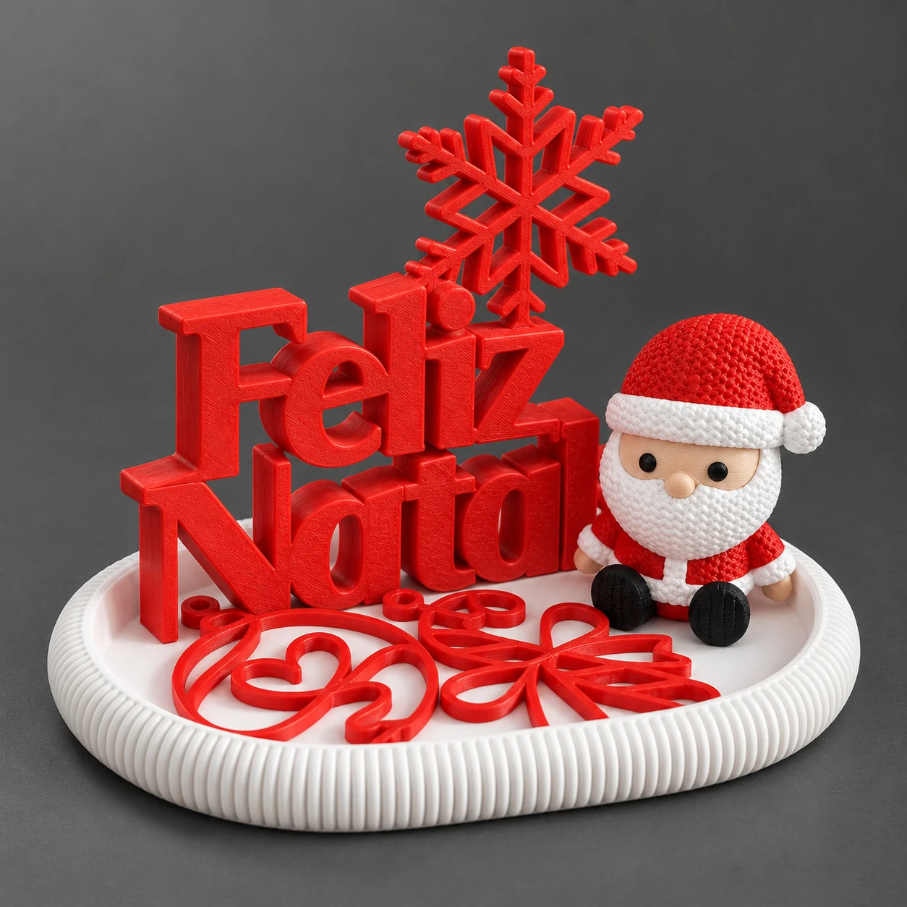
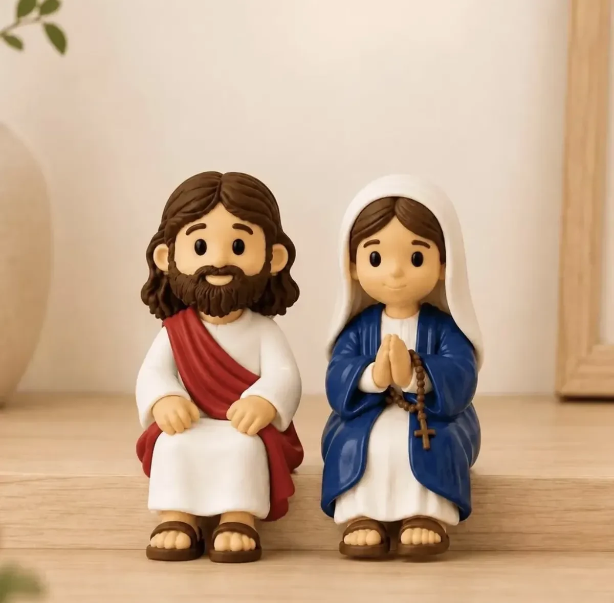

Presente com significado
Escolha um modelo que combine com a pessoa e com a ocasião.
Encontre presentes, decoração e peças articuladas em impressão 3D. Escolha seu favorito, veja os detalhes e converse com a CAMPRINT para fazer seu pedido.

Uma lembrança para presentear, um toque especial na decoração ou uma peça para deixar à vista todos os dias.
Escolha um modelo que combine com a pessoa e com a ocasião.
Veja de perto as formas, cores e texturas nas galerias dos produtos.
Converse sobre cores e personalização disponíveis para o modelo escolhido.
Para presentear, decorar ou colecionar: explore cada modelo, veja suas fotos e descubra o que faz parte de cada kit.
Veja uma peça articulada sendo movimentada de verdade. As conexões, as camadas e o acabamento fazem parte da experiência.
Veja antes de escolherO vídeo mostra como o modelo se movimenta.
Observe de pertoCamadas e articulações visíveis, sem esconder a peça.
Peça com referênciaLeve o modelo que gostou para sua conversa com a CAMPRINT.

Referência visual de modeloColecionáveis e peças decorativas podem transformar uma referência em um presente cheio de significado.
As imagens de referência ajudam a explicar a ideia. Modelo, acabamento e viabilidade são confirmados na conversa antes da produção.
Escolha o modelo e prepare sua mensagem. Assim, você pode consultar disponibilidade, valor e prazo antes de decidir sua compra.
Um caminho claro para escolher o modelo e conversar sobre o pedido.
Explore as imagens, abra os detalhes e veja o modelo em movimento quando houver vídeo.
Escolha a referência e indique sua preferência de cor ou personalização.
Copie ou compartilhe a mensagem pelo canal CAMPRINT e confirme os detalhes antes da compra.
Cada produto reúne suas imagens e, quando disponível, vídeo ou diferentes ângulos. Algumas miniaturas e luminárias são identificadas como referências visuais; confirme os detalhes da peça no atendimento.
Informe sua preferência. As cores, os detalhes e a possibilidade de personalização dependem do modelo e são confirmados antes do pedido.
A confirmação é feita no canal de compra da CAMPRINT. Este site apresenta modelos e referências, sem calcular valores automaticamente.
As peças são construídas em camadas. Linhas de camada e diferenças de textura podem aparecer conforme o modelo, material e processo. Use fotos, vídeos e referências para alinhar o acabamento desejado.